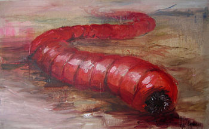

La cryptozoologie signifie littéralement "étude des animaux cachés"
(du grec ancien "kruptós", « caché », "zỗion", « animal », et "lógos", « étude », soit « étude des animaux cachés »).
Il s'agit de l'étude des animaux inconnus ou supposés éteints. En d'autres termes, les cryptozoologues s'intéressent aux animaux dont l'existence même est controversée, comme par exemple le Chupacabra, le Monstre du Loch Ness ou encore l'Olgoï-Khorkhoï.
Les cryptozoologues ont déjà prouvé l'existence de nombreuses espèces comme le calamar géant, l'okapi et beaucoup d'autres.

la cryptozoologie peut s'alier à la zoologie, la paléontologie, la paléoanthropologie, etc., mais aussi la psychologie, l'ethnologie, la mythologie, voire la police scientifique dans des cas plus rare.
Les animaux dont l'existance n'a pas été scientifiquement prouvée s'appelent des cryptide
On peut classer un cryptide en 5 catégories, qui parfois se complètent l'une l'autre :
Un cryptide connu uniquement par tradition ou traces dans la mémoire collective des autochtones sous forme de légendes ou de contes, voire à travers certaines représentations graphiques.
Un cryptide connu uniquement par témoignages visuels, auditifs, voire tactiles ou olfactifs.
Un cryptide connu par une empreinte matérielle (comme une trace de pied).
Un cryptide connu par un ou plusieurs éléments anatomiques (fragments de squelette, poils, écailles, traces de sang, etc.).
Un cryptide connu au travers d'un dit spécimen complet vivant ou mort (mais généralement non-identifiable).